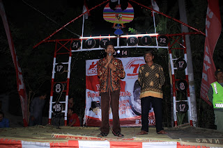

Warta Informasi & Arsip Dokumentasi Desa
Kumpulan Berita, Liputan Pembangunan, dan Dinamika Kemasyarakatan Desa Palur
 06 Sep 2017
06 Sep 2017
Sambutan Selamat Datang Kepala Desa Palur
Pengantar resmi peluncuran media portal informasi desa sebagai jembatan komunikasi antara aparatur pemerintah desa dengan segenap masyarakat luas.
Baca Selengkapnya 27 Agu 2017
27 Agu 2017
Malam Tirakatan Memperingati HUT RI ke-72 Warga Palur
Malam perenungan kemerdekaan bersama warga Desa Palur diisi dengan penampilan koor lagu nasional, pembacaan puisi perjuangan, dan wejangan kebangsaan oleh Kepala Desa Sugito.
Baca Selengkapnya 22 Agu 2017
22 Agu 2017
Semarak Perlombaan HUT NKRI ke-72 Dukuh Klaruan RW 14
Keceriaan warga Dukuh Klaruan RW 14 mengikuti aneka lomba khas agustusan seperti balap karung, makan mie ayam, pecah air, dan joget gembira yang mempererat tali silaturahmi.
Baca Selengkapnya
01 Agu 2017Halal Bi Halal Pertanian di BPP Tani Budaya Kecamatan Mojolaban
Pertemuan silaturahmi para kelompok tani dan penyuluh pertanian se-Kecamatan Mojolaban di BPP Tani Budaya guna memperkuat sinergi ketahanan pangan dan peningkatan hasil panen.
Baca Selengkapnya 30 Jul 2017
30 Jul 2017
Perbaikan dan Pengaspalan Jalan Utama Desa Palur
Realisasi pemeliharaan jalan utama yang berlubang di Dukuh Jatimalang, Klaruan, hingga perbatasan Karanganyar guna meningkatkan kenyamanan dan keselamatan berkendara warga.
Baca Selengkapnya 02 Agu 2017
02 Agu 2017
Sosialisasi dan Penyerahan Sistem Informasi Desa
Aparatur dan tokoh masyarakat Desa Palur mengikuti sosialisasi pemanfaatan teknologi informasi untuk mempermudah akses transparansi dokumen dan administrasi publik warga.
Lihat Dokumentasi Galeri